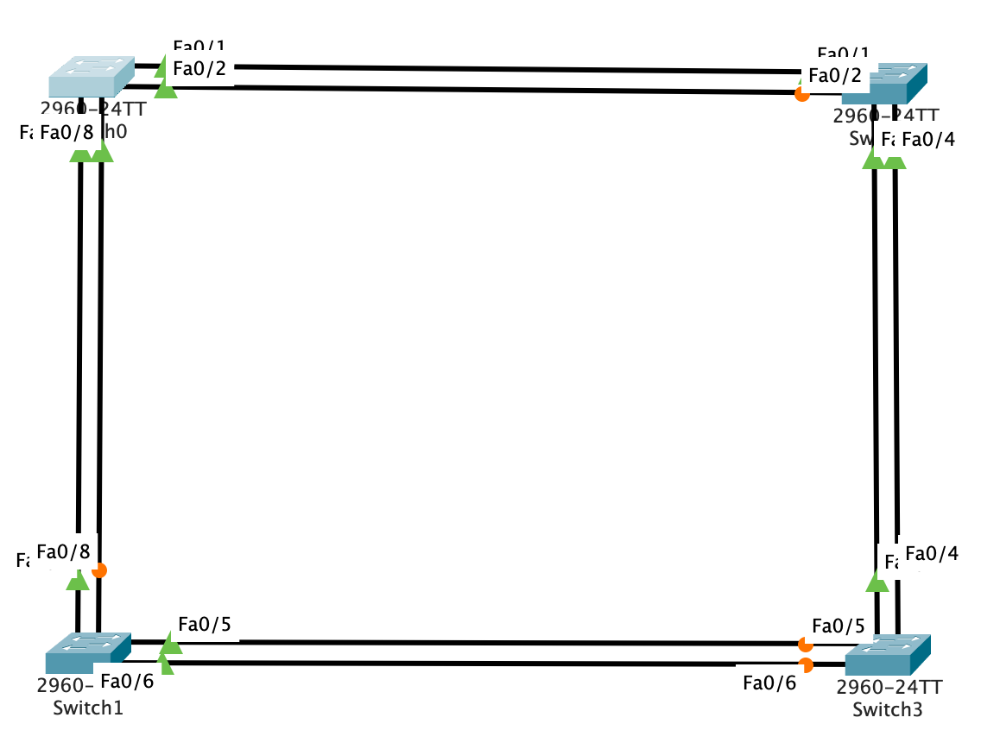

Mr Khalil Debbaj
Quelques astuces :
control + ^ sur Mac.Preferences > Font > Dialogs > CLI. Il vous faudra ensuite fermer les consoles en cours et les relancer.La maitrise de certaines notions liées au réseau est essentielle dans le développement de certaines applications. Il peut être plus qu'utile d'être capable de mettre en place une configuration réseau en concordance avec les besoins des applications, que ce soit en terme de latence ou de bande passante.
Source: Wikipedia.
Un ordinateur connecté à un réseau informatique souhaite émettre une trame ethernet à destination d’un autre ordinateur dont il connaît l’adresse IP et placé dans le même sous-réseau. Dans ce cas, cet ordinateur va placer son émission en attente et effectuer une requête ARP en broadcast de niveau 2. Cette requête est de type « quelle est l’adresse MAC correspondant à l’adresse IP adresseIP ? Répondez à monAdresseIP ».
Puisqu’il s’agit d’un broadcast, tous les ordinateurs du segment vont recevoir la requête. En observant son contenu, ils pourront déterminer quelle est l’adresse IP sur laquelle porte la recherche. La machine qui possède cette adresse IP sera la seule à répondre en envoyant à la machine émettrice une réponse ARP du type « je suis adresseIP, mon adresse MAC est adresseMAC ». Pour émettre cette réponse au bon ordinateur, il crée une entrée dans son cache ARP à partir des données contenues dans la requête ARP qu’il vient de recevoir.
La machine à l’origine de la requête ARP reçoit la réponse, met à jour son cache ARP et peut donc envoyer à l’ordinateur concerné le message qu’elle avait mis en attente.
192.168.1.0/23Le /23 s'appelle un masque, et designe le nombre de bits réservés dans l'adresse IP. Il peeut également se traduire comme un filtre à 23 bits à 1 sous le format 255.255.254.0
32 - 23 = 9, et 2^9 = 512. On a donc 512 IPs disponibles dans notre réseau. Par principe, nous n'utilisons jamais la première et la dernière adresse. Cela signifie donc qu'on peut avoir potentiellement jusqu'à 510 machines connectées à ce réseau.
Il faut bien noter que, même si les réseaux en
/24sont les plus répandus, il n'est pas rare, notamment dans le monde professionnel, de trouver des réseaux avec des masques différents.
On va se pencher sur les masques lorsqu'on s'intéresse à des usages spécifiques.
Exemple : Un gestionnaire des magasins McDonalds s'occupe des restaurants ouverts sur le 12ème arrondissement de Paris. Il ouvre un nouveau magasin, ce qui monte le nombre total de magasins à 5. Il souhaite utiliser l'adresse 192.168.12.0 comme adresse dédiée aux magasins du 12ème arrondissement.
Cependant, les restaurants ont, au plus, une dizaine de machines. Hors, cette adresse 192.168.12.0 peut contenir 256 adresses IPs, ce qui est disproportionné par rapport au besoin de chaque restaurant. On va donc diviser cette adresse en utilisant un masque afin de donner à chaque magasin un nombre d'adresses IPs plus cohérent.
Attention : Si on a deux réseaux qui se suivent en /24, on ne peut pas forcement les associer en /23. Par exemple, si on a 192.168.1.0/24 et 192.168.2.0/24, on ne peux pas en faire un 192.168.1.0/23. Il faut que le premier réseau commence par un nombre pair.
Le premier réseau a une adresse "paire" :
| 192 | 168 | 0 | 0 |
|---|---|---|---|
| 11000000 | 10101000 | 00000000 | 00000000 |
| 192 | 168 | 1 | 0 |
|---|---|---|---|
| 11000000 | 10101000 | 00000001 | 00000000 |
La partie commune est de 23 bits, on peut donc l'associer en /23.
Le premier réseau a une adresse "impaire" :
| 192 | 168 | 1 | 0 |
|---|---|---|---|
| 11000000 | 10101000 | 00000001 | 00000000 |
| 192 | 168 | 2 | 0 |
|---|---|---|---|
| 11000000 | 10101000 | 00000010 | 00000000 |
La partie commune est de 22 bits, on peut donc l'associer en /22 mais pas en /23.
Exercice : La région Bretagne (Ile et Vilaine - 35) est associée à l'adresse 172.35.0.0/22. Déterminer les plages nécessaire pour les sites suivants :
Correction :
1. 172.35.0.0/28 -> 172.35.0.15
2. 172.35.0.32/27 -> 172.35.0.63 (on part de .32 car le sous-réseau .16 est impair)
3. 172.35.0.64/28 -> 172.35.0.79VLSM : Variable Length Sub Mask
Exercice : Prenons l'adresse 129.213.0.0/20. Créez les 4 sites suivants :
Correction :
1. 129.213.0.0 /27
2. 129.213.0.64 /26
3. 129.213.0.128 /25
4. 129.213.1.0 /26L'utilisation des materiels impliqués dans la mise en place des réseaux n'était pas satisfaisante pour l'amélioration des performances réseau. En moyenne, un serveur n'est utilisé qu'aux alentours de 10% de son temps d'allumage. Cela entrainait des pertes sèches en terme de consommation, de refroidissement et d'entretien. C'est pour répondre à cette problématique qu'ont été introduits les Virtuals LANs (ou vLAN).
Le principe est simple : on divise un gros switch matériel en plusieurs petits switchs virtuels.
Avec un vLAN, on peut s'affranchir de certains problèmes inhérents aux LANs classiques :
Spanning Tree : Un algorithme inventé par Radia Perlman au MIT visant à obtenir une topologie réseau permettant entre autre d'éviter les boucles réseau. Il existe plusieurs versions :
Bridge ID : composé de deux valeurs qui vont subir des comparaisons
Pour déterminer la priorité entre deux switchs, on regarde d'abord leurs priorités. Si on ne peux pas les départager, on utilise l'adresse MAC. Les materiels les plus récents ont une adresse MAC plus grande que les anciens, donc ils perdent forcement les élections face à des matériels plus anciens. C'est pour ça que des commandes existent et permettent à un administrateur réseau de sélectionner lui-même les bridges dans sa topologie.
Pour de la redondance de lien, on peut rassembler plusieurs chemins dans un seul port virtuel (port channel).
Protocoles de negociation :
Pour configurer un switch, il faut entrer dans le mode de configuration du switch. Pour ce faire, on entre dans le terminal du switch, et on tape les commandes suivante :
en
conf tPour entrer dans le terminal d'un switch dans Packet Tracer, il faut se rendre dans l'onglet CLI de la fenêtre de configuration du switch.
On est en mode config, on peut désormais implémenter les interfaces.
Dans la plupart des extraits de commandes présentés dans la suite, il sera nécessaire d'entrer en mode config avant de pouvoir les exécuter.
Quelques astuces de commandes :
Vous rencontrerez un certain nombre de commandes dans la suite des notes, qui peuvent être facilement raccourcies. Voici quelques-uns des plus communs, mais n'hésitez pas à en chercher d'autres.
enable | en
interface | int
show | shPrincipe :
trunk.En règle générale, on implémente une interface sur deux switchs, aux extermités de liaisons multiples. Ainsi, si il existe 2 connexions entre un switch A et B, il faudra implémenter deux interfaces : une sur le switch A et une sur le switch B.
En commandes, cela donne :
1 - On sélectionne le(s) port(s) avec une des trois options suivantes :
interface range f0/1 // On sélectionne le port 1.
interface range f0/1-4 // On sélectionne les ports 1 à 4 (1, 2, 3 et 4).
interface range f0/1,4 // On sélectionne les ports 1 et 4.2 - On crée un channel-group avec son ID et son MODE, qui dépend du protocole qu'on souhaite utiliser (LACP, PAGP ou aucun) :
channel-group ID mode MODE3 - On sélectionne le port-channel du channel-group qu'on vient de créer :
interface port-channel ID4 - On passe ce port-channel en mode trunk :
switchport mode trunkEt votre interface est désormais bien implémentée.
interface range f0/1-2
channel-group 1 mode active
exit
interface port-channel 1
switchport mode trunk interface range f0/1-2
channel-group 1 mode desirable
exit
interface port-channel 1
switchport mode trunk interface range f0/1-2
channel-group 1 mode on
exit
interface port-channel 1
switchport mode trunk Soit le réseau ci-dessous :

Comment peut-on éviter les liens coupés (en orange) ?
L'objectif est de créer des port-channels pour gérer les différents liens. En partant du principe que le réseau est configuré comme montré sur le schéma ci-dessus :
Sur le Switch0 :
int range f0/1-2
channel-group 1 mode active
exit
int port-channel 1
switchport mode trunkint range f0/7-8
channel-group 2 mode active
exit
int port-channel 2
switchport mode trunkSur le Switch1 :
int range f0/1-2
channel-group 1 mode active
exit
int port-channel 1
switchport mode trunkint range f0/3-4
channel-group 2 mode active
exit
int port-channel 2
switchport mode trunkSur le Switch2 :
int range f0/3-4
channel-group 1 mode active
exit
int port-channel 1
switchport mode trunkint range f0/5-6
channel-group 2 mode active
exit
int port-channel 2
switchport mode trunkSur le Switch3 :
int range f0/5-6
channel-group 1 mode active
exit
int port-channel 1
switchport mode trunkint range f0/7-8
channel-group 2 mode active
exit
int port-channel 2
switchport mode trunkOn a regroupé les liens dupliqués dans des port-channels, les liens ne sont donc plus coupés. Si vous avez réussi, toutes les connexions devraient passer au vert.
Le VTP (Vlan Trunking Protocol) permet de gérer la configuration des VLAN automatiquement. Ce protocole permet de transmettre automatiquement, via les ports trunk, la configuration des vlans.
Il existe 3 modes de switch :
Ainsi, un switch en mode serveur va transmettre sa configuration aux switchs clients, qui connaitront les différents vlan créés par le serveur. Les switchs en mode transparent n'appliquent pas ces configurations.
Si on veut intégrer des anciens switchs dans son réseau, on peut se dire qu'il suffit de réinitialiser la configuration et de l'intégrer au réseau en l'ajoutant au domaine VTP. Mais un gros problème peut survenir.
Si le switch a, au cours de sa vie, participé à beaucoup de VLAN, sa base de donnée de VLAN peut être ancienne, et avoir un numéro de version plus grand que les autres switchs du domaine. Par conséquent, les autres switchs du domaine vont remplacer leurs base de VLAN par celle de cet ancien switch.
Pour éviter ce problème, il faut réinitialiser la config du VLAN ET supprimer sa base de VLAN.
Pour assigner un port (ici pour l'exemple le port 5) à un VLAN (ici pour l'exemple le VLAN 3), sur le switch :
int f0/5
switchport mode access
switchport access vlan 3La machine branchée sur le port 5 du switch appartiendra donc au VLAN 3.
Maintenant qu'on maitrise les switchs et les VLANs, ont veut que des machines puissent communiquer avec d'autres machines qui sont dans des VLANs différents.
On va donc ajouter à notre réseau un routeur, qui sera connecté au switch bridge.
Vu que des paquets venant de différents VLANs vont circuler vers le routeur, il faut que la liaison soit en mode trunk. Pour ce faire, on utilise la séquence habituelle côté switch, et on va créer une sous-interface par VLAN sur le routeur comme ceci :
int f0/0
no ip address
no shutdown
int f0/0.2
encapsulation dot1Q X // avec X le numéro du VLAN
ip address 192.168.2.254 255.255.255.0 // ip terminée par 254 et le masquePour communiquer entre les VLANs, il faut préciser sur toutes les machines la gateway. La gateway est l'adresse IP de la sous-interface appartenant au VLAN de la machine.
Dans Packet Tracer, on peut modifier la gateway dans l'onglet Config d'une machine.
Par exemple, pour une machine PC-1 dans un vlan 3, si l'adresse de la sous-interface du vlan 3 dans le routeur est 192.168.3.254, la gateway de PC-1 sera cette adresse.
conf t
ip dhcp protocol CQTV1
network 192.168.X.0 255.255.255.0 // avec X le numéro du VLAN
default-router 192.168.X.254 // avec X le numéro du VLAN
domain-name 8.8.8.8